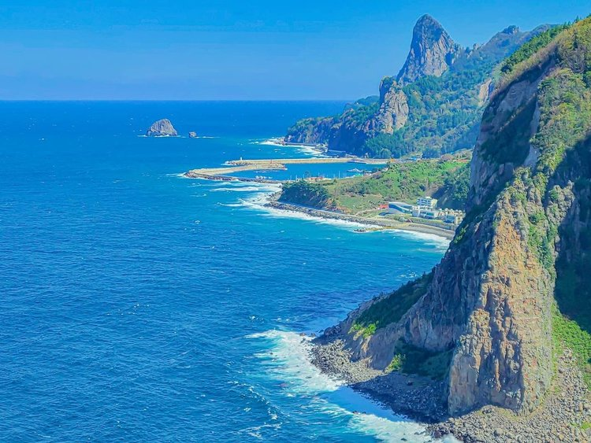

독도는 대한민국 경상북도 울릉군 울릉읍 독도리에 위치한 섬으로, 동해 한가운데 자리잡고 있다. 독도는 두 개의 주요 섬(동도와 서도)과 주변의 89개의 작은 바위섬들로 구성되어 있다. 이 섬들은 화산 활동으로 형성된 것으로, 화산암과 현무암으로 이루어져 있다. 독도의 총 면적은 약 187,554㎡이며, 해발고도는 168.5m에 이른다. 독도는 급경사의 절벽과 바위로 둘러싸여 있으며, 이로 인해 사람들의 접근이 어려운 편이다. 또한, 독도는 강한 바람과 해류, 파도로 인해 독특한 지리적 특성을 가지고 있다.
독도는 특유의 지리적 특성과 기후로 인해 독특한 생태계를 형성하고 있다. 독도 주변 해역은 풍부한 해양 생물 자원을 보유하고 있으며, 이는 독도의 바다 생태계를 다채롭고 풍부하게 만든다. 특히, 독도 주변의 해양은 어류, 해조류, 무척추동물 등이 서식하는 중요한 서식지로 알려져 있다. 독도의 육상 생태계는 척박한 환경 속에서도 다양한 식물과 동물들이 서식하고 있다. 예를 들어, 섬기린초, 독도한련 등 독도 특유의 식물들이 자라고 있으며, 괭이갈매기, 흑비둘기 등 다양한 조류들이 독도에서 번식한다. 독도의 생태계는 인간의 간섭이 적어 비교적 자연 상태가 잘 보존되어 있다.
독도는 대한민국의 중요한 자연유산으로, 이를 보호하기 위한 다양한 노력이 이루어지고 있다. 독도는 1982년 천연기념물 제336호로 지정되어 보호받고 있으며, 1999년에는 독도 천연보호구역으로 지정되었다. 이러한 보호 조치는 독도의 생태계를 유지하고 보존하기 위해 필수적이다. 독도에서의 어업 활동과 관광은 엄격히 규제되고 있으며, 이를 통해 독도의 자연환경이 훼손되지 않도록 하고 있다. 또한, 독도의 자연을 보호하기 위해 정부와 민간 단체가 협력하여 다양한 환경 보호 활동을 전개하고 있다.
독도의 자연환경과 생태계에 대한 연구는 지속적으로 이루어지고 있다. 이는 독도의 생태적 가치를 이해하고, 이를 효과적으로 보호하기 위한 과학적 기반을 마련하는 데 중요한 역할을 한다. 여러 연구기관과 대학에서는 독도의 지질학적 특성, 해양 생태계, 기후 변화 등의 다양한 주제를 다루는 연구를 진행하고 있다. 또한, 독도에 대한 교육도 활발히 이루어지고 있다. 독도의 자연과 역사, 생태계에 대한 교육 프로그램은 학생들과 일반 대중에게 독도의 중요성을 알리고, 자연 보호의 필요성을 강조하는 데 기여하고 있다. 이를 통해 독도에 대한 이해와 관심이 높아지고 있으며, 이는 독도의 지속 가능한 보전에 중요한 역할을 한다.
